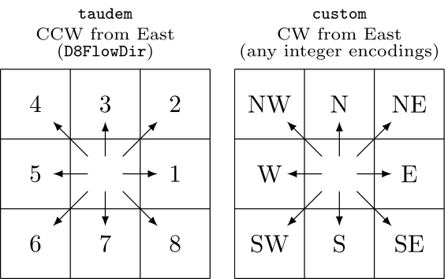
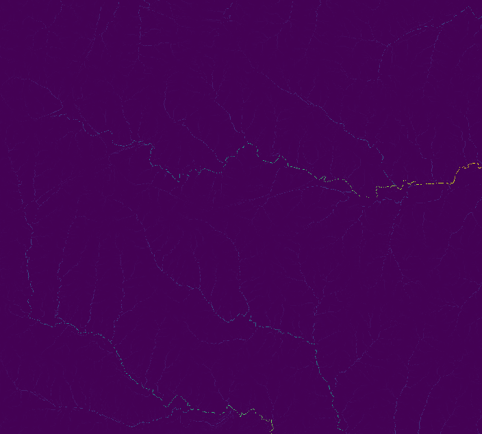
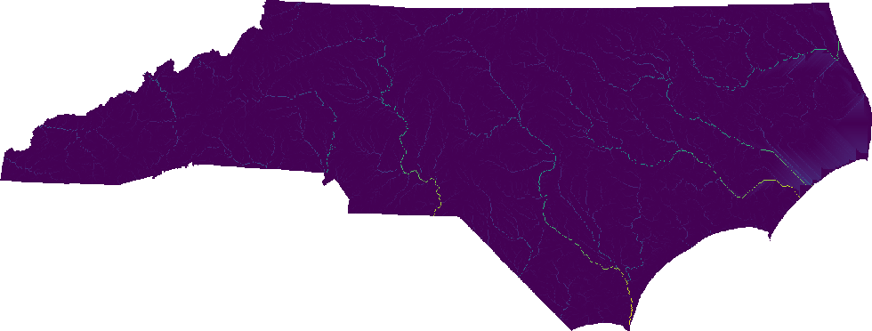

r.upflowlength also supports the taudem format, which is used by TauDEM's D8FlowDir. This format is not auto-detected because it shares the same encoding range of the 45degree format. Additionally, the module can accept any integer encodings with the custom format and encoding option, which uses eight numbers for E, SE, S, SW, W, NW, N, and NE. For example, to encode the 45degree format using this method, one can use format=custom encoding=8,7,6,5,4,3,2,1.

When parallel processing is enabled with the nprocs option, r.upflowlength uses OpenMP's shared-memory model and the specified number of threads to parallelize the computation.
Extract all draining cells (all outlets for the elevation raster), and calculate all watersheds and longest flow paths:
# set computational region g.region -ap rast=elevation # calculate drainage directions using r.watershed r.watershed -s elev=elevation drain=drain # calculate upstream flow length r.upflowlength input=drain output=uflen # or using a custom format for r.watershed drainage (8-1 for E-NE CW) r.upflowlength input=drain format=custom encoding=8,7,6,5,4,3,2,1 output=uflen2

Perform the same analysis using the statewide DEM, elev_state_500m:
# set computational region g.region -ap rast=elev_state_500m # calculate drainage directions using r.watershed r.watershed -s elev=elev_state_500m drain=nc_drain # calculate upstream flow length r.upflowlength input=nc_drain output=nc_uflen # or using a custom format for r.watershed drainage (8-1 for E-NE CW) r.upflowlength input=nc_drain format=custom encoding=8,7,6,5,4,3,2,1 output=nc_uflen2
